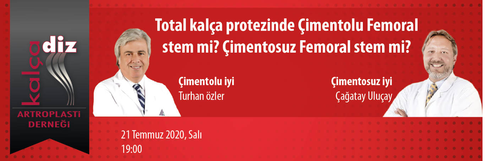

Değerli Meslektaşlarımız,
Kalça Diz Artroplasti Derneği eğitim faaliyetleri içerisinde yer alan "Webinar" oturumu 21 Temmuz 2020, Salı günü saat 19:00'de gerçekleştirilecektir.
Doç. Dr. Çağatay Uluçay ve Doç. Dr. Turhan Özler'in sunacağı “Total kalça protezinde Çimentolu Femoral stem mi? Çimentosuz Femoral stem mi? ”konulu webinar'a http://webinar.artroplasti.org.tr adresinden, bilgisayar ve mobil cihazlarınızla bağlanabilirsiniz.
Bu eğitim yılı içinde düzenlediğimiz diğer webinarlarımızın kayıtları, portalımız www.artroplasti.org.tr üzerinden dernek üyelerimizin erişimine sunulmuştur.
Saygılarımızla,
Webinar kaydını izlemek için tıklayınız.

